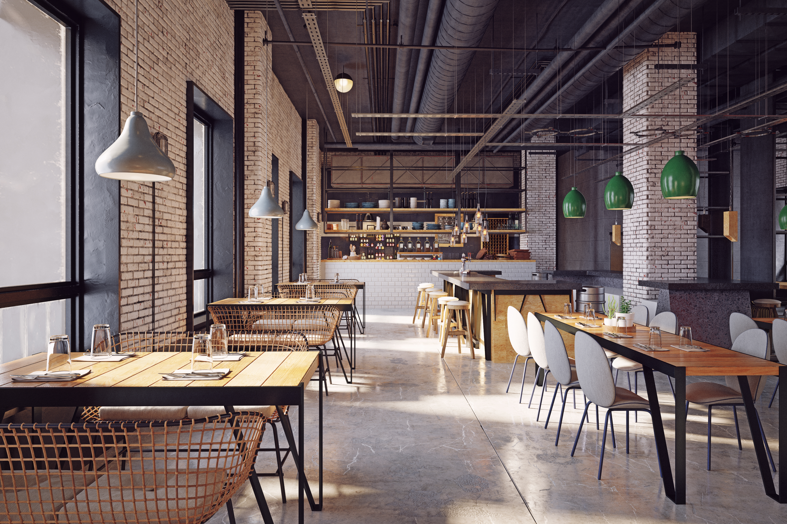
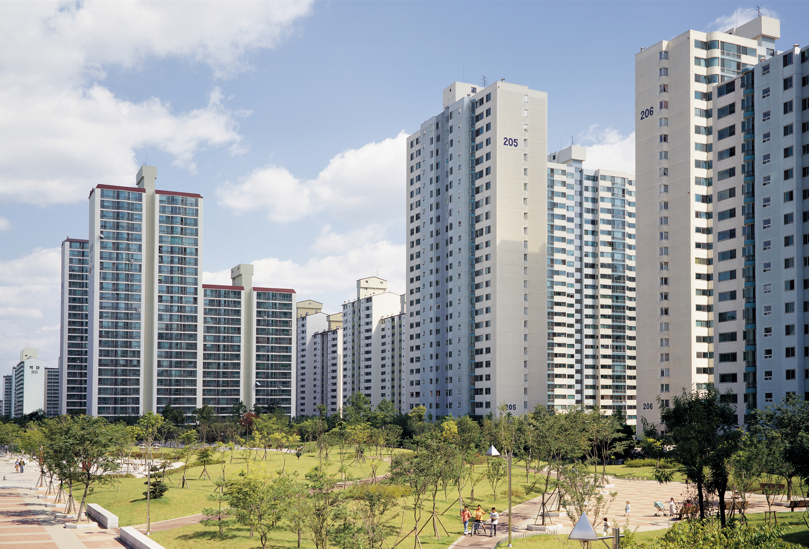

단순히 화려한 인테리어에 그치지 않고
입주민이 실제로 편리하게 이용할 수 있는
실용 중심의 커뮤니티 공간을 설계합니다
NDDS

아파트 이름이 같아서, 위치가 비슷해서, 세대수가 비슷해서...
똑같은 프로그램과 똑같은 커뮤니티 운영을 한다면
우리 아파트 커뮤니티 운영은 실패합니다
아파트마다의 특성과 생활패턴, 입주민의 수요 등
정밀한 진단과 컨설팅이 이뤄져야
우리 아파트에 최적화 된 커뮤니티 운영이 가능합니다

단순히 화려한 인테리어에 그치지 않고
입주민이 실제로 편리하게 이용할 수 있는
실용 중심의 커뮤니티 공간을 설계합니다
입주민의 수요와 이용 패턴을 분석하여
지속적으로 운영 가능한 프로그램과
체계적인 커뮤니티 운영 방향을 제안합니다
현장 답사를 통해 공간 구조와 동선을 확인하고
단지 특성에 맞는 운영 가능성을 검토하여
실행력 있는 컨설팅 방향을 수립합니다
상담 및 현장 니즈 확인
단지 상황에 맞는 담당자 배정
시설과 입주민 수요 분석
운영 방향과 개선안 제안
실행 가능한 운영 시스템 구축
커뮤니티 운영 경험을 갖춘 전담 인력이 현장 상황에 맞춰 안정적인 운영 관리를 지원합니다
이용 흐름과 관리 방식을 점검하여 불필요한 운영 낭비를 줄이고 서비스 품질을 균일하게 관리합니다
지속적인 운영 개선과 프로그램 관리를 통해 입주민 만족도와 단지 커뮤니티의 활용 가치를 높입니다
시설 관리, 민원 응대, 운영 이슈에 대해 현장 중심의 빠르고 체계적인 대응이 가능합니다

※ 3개 이상 해당 시
'NDDS의 전문 컨설팅'이 필요합니다